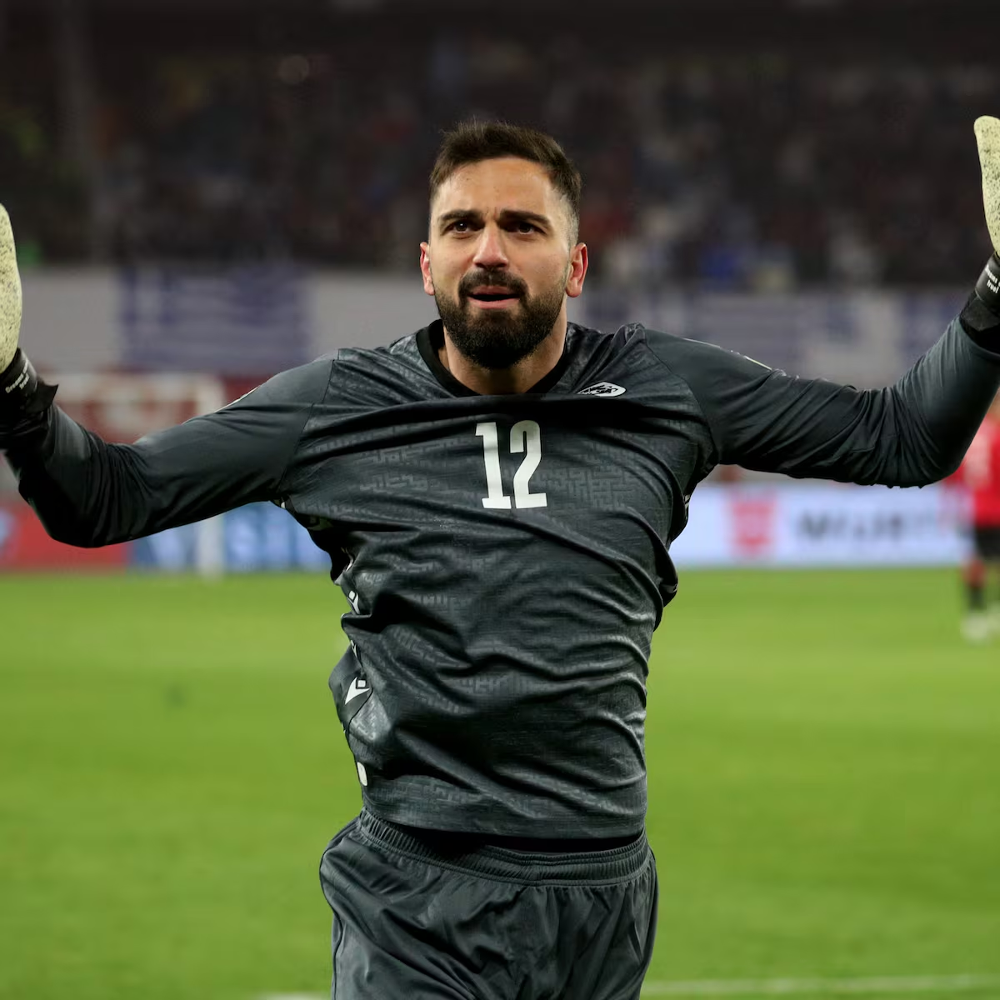
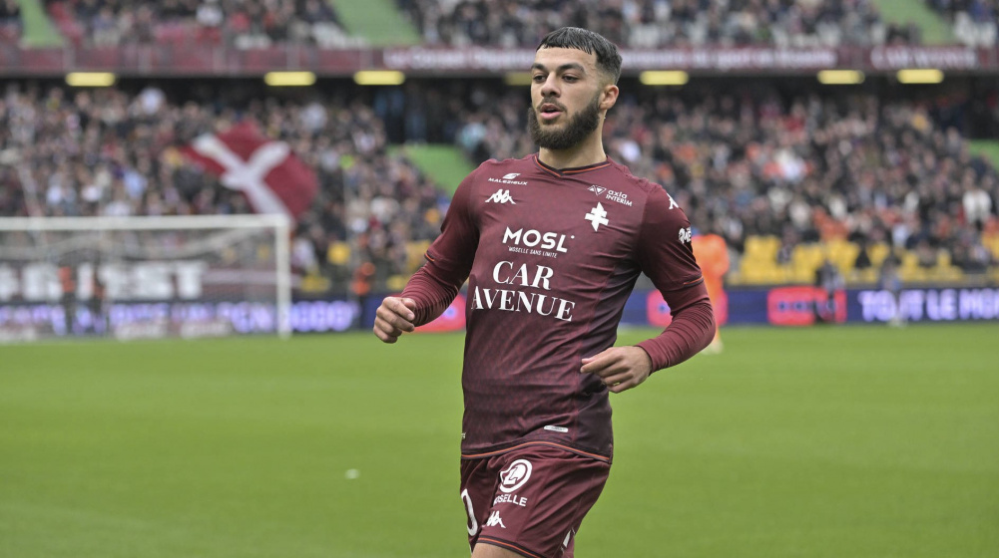
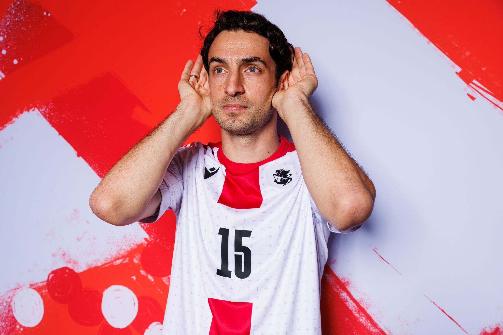

Khvicha Kvaratskhelia is a Georgian professional footballer who plays as a winger for Serie A club Napoli and the Georgia national team.
Giorgi Mamardashvili

Giorgi Mamardashvili is a Georgian professional footballer who plays as a goalkeeper for La Liga club Valencia and the Georgia national team.
Giorgi Mikautadze

Georges Mikautadze is a professional footballer who plays as a forward for FC Metz. Born in France to Georgian parents from Tbilisi, he plays for the Georgia national team.
Giorgi Gvelesiani

Giorgi Gvelesiani is a Georgian professional footballer who plays as a Centre-back for Iranian club Persepolis
to countinue browsing. you need to go through registration.